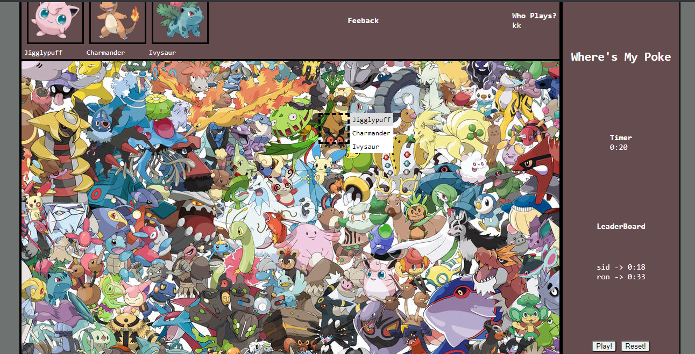
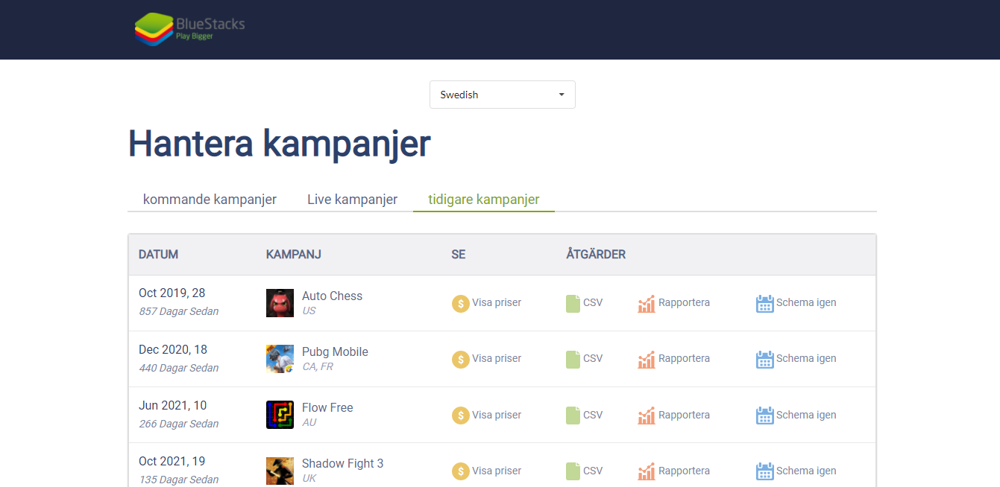
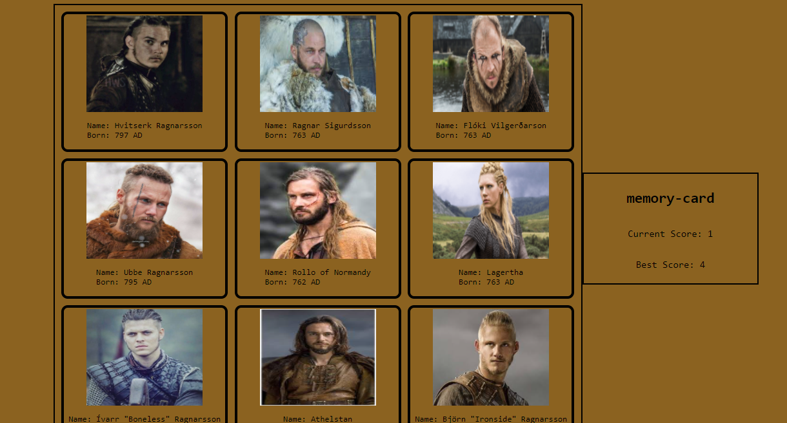
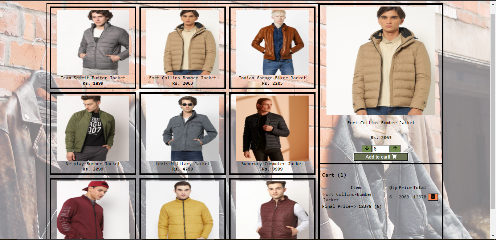
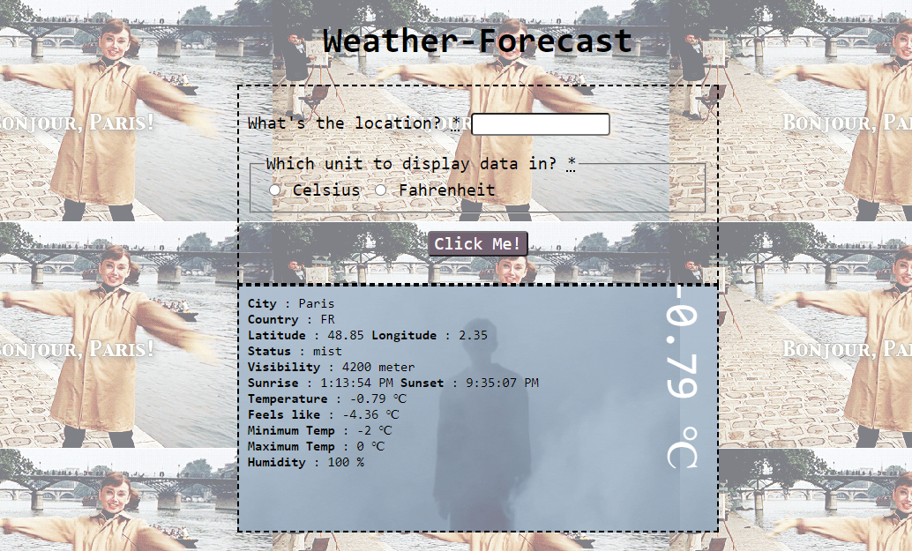

Some of my projects:

Spinoff version of popular Where's Waldo game built with Pokemon Characters where One needs to find 3 old generation Pokes - Jigglypuff, Charmander, Ivysaur from the large photograph that contains hundreds of jumbled up pokes.
tech: vanilla javascript, css-flexbox and grid, firebase, webpack.
link: josh1-sarthak.github.io/where-is-my-poke

Built a responsive campaigns web app for a gaming firm as a part of take-home assignment. It involves localization, campaign categorization based on dates and modal functionality.
tech: React, CSS flexbox, Semantic UI React, react-datepicker, react-i18next for localization
link: josh1-sarthak.github.io/campaigns

Game built with react that tests ones' memory and recognition power by forcing them to remember the clicked cards from the deck of multiple cards which gets shuffled everytime one clicks.
tech: React, Hooks, CSS grid and flexbox
link: josh1-sarthak.github.io/memory-card

Single Page menswear Jacket ordering website built with React with automatic cart updation on the same page itself without having to click through the links to reach the cart
tech: React, Hooks, styled components, CSS grid and flexbox, react-icons
link: josh1-sarthak.github.io/shopping-cart

Weather forecast app involving the use of OpenWeather API and Giphy API calls for displaying weather stats of entered city and changing the background according to both entered city and weather status
tech: vanilla javascript, promises, async/await, factory functions, webpack, OpenWeatherAPI, Giphy API
link: josh1-sarthak.github.io/weather-forecast